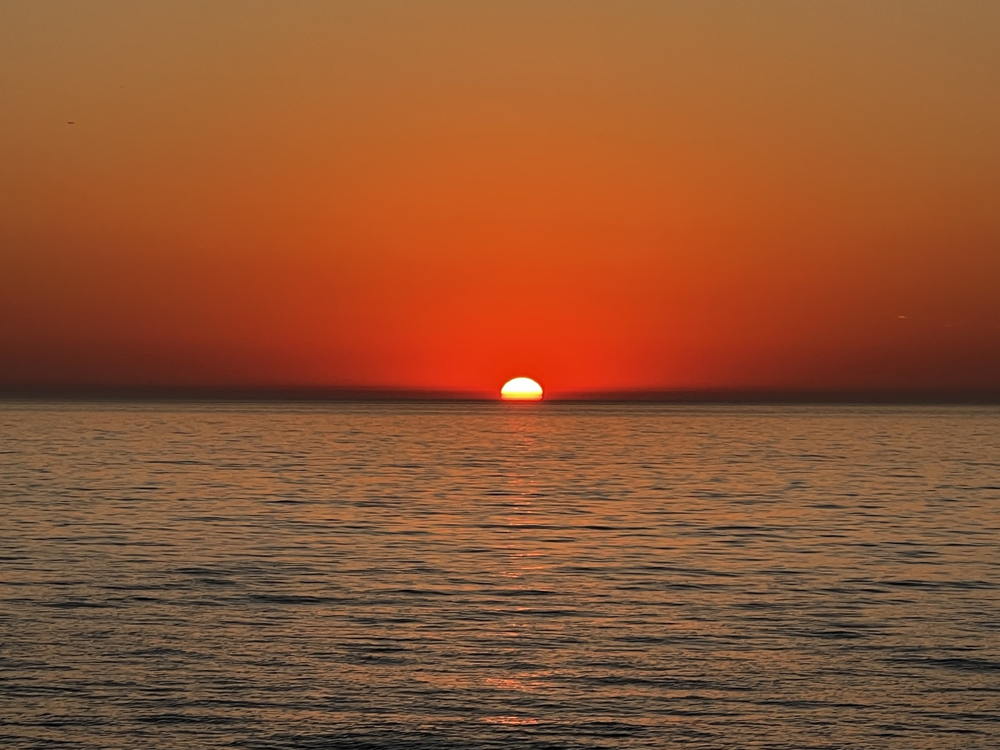
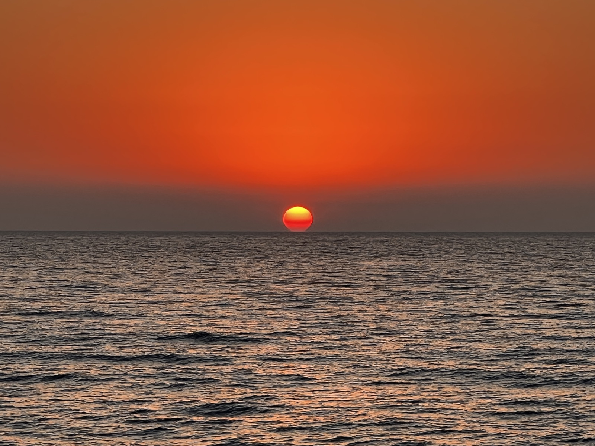
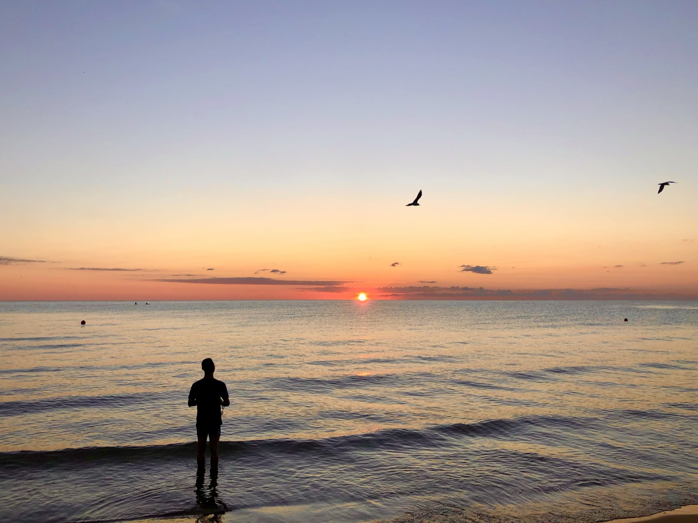
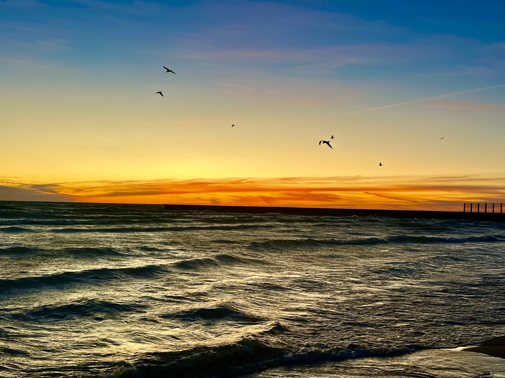
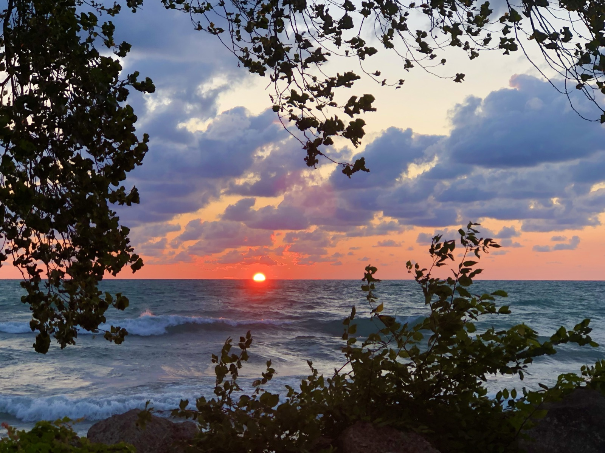
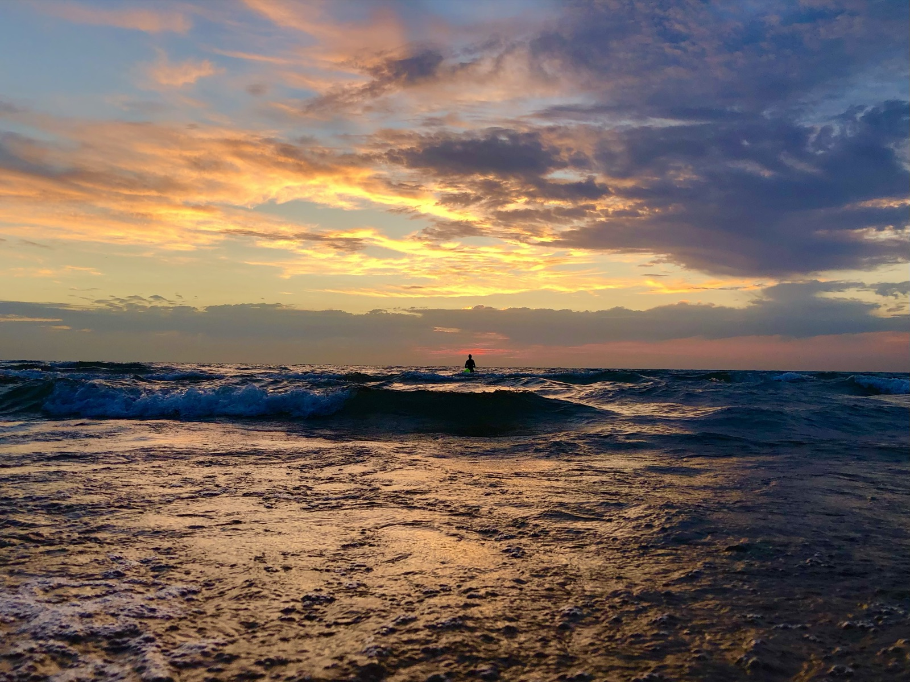
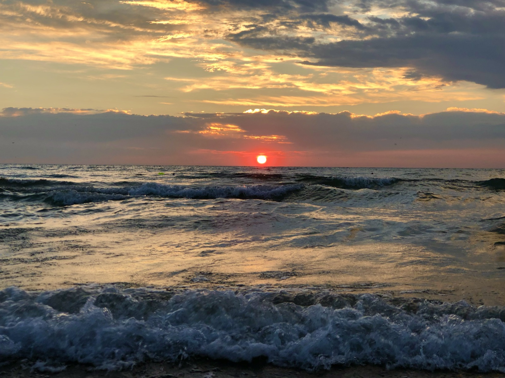
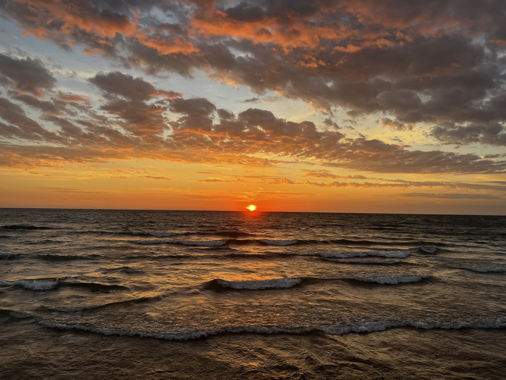

Outside of research, I am happiest outdoors, chasing light, motion, and perspective. Three hobbies keep me inspired.
I often start the day with the sunrise.
The first light always feels fresh and full of possibility, and no two skies are ever the same.








I love running along Lake Michigan on warm days.
Running keeps me grounded while pushing me forward.
Flying a drone lets me see the world from a wider perspective.
I enjoy capturing the scale of nature and the geometry of human design from above.